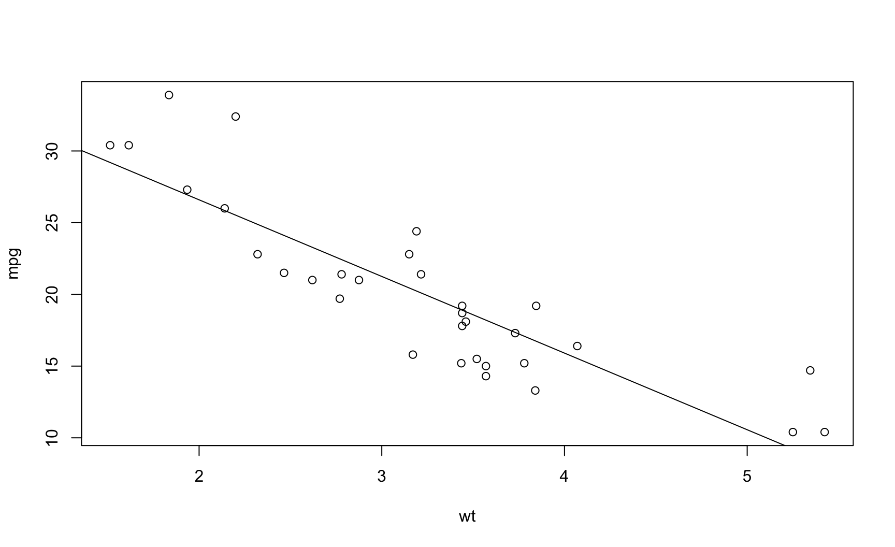
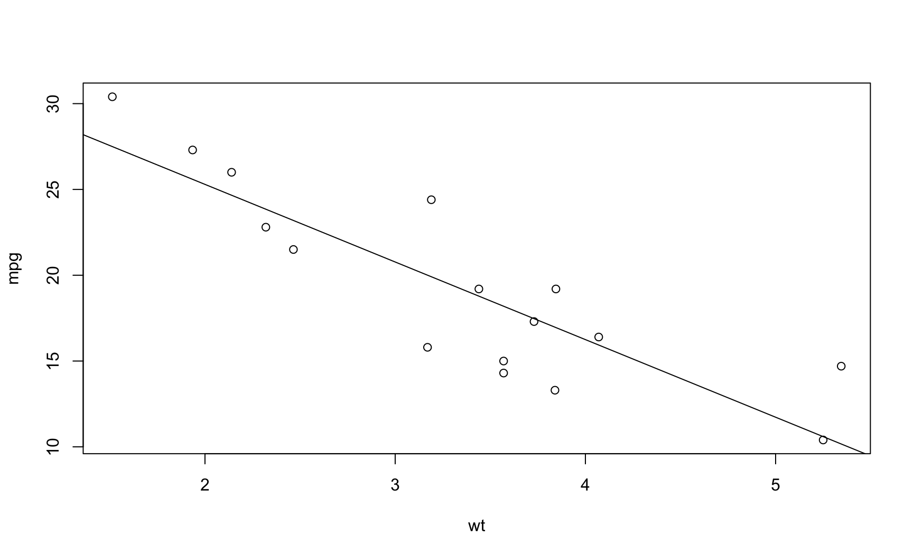
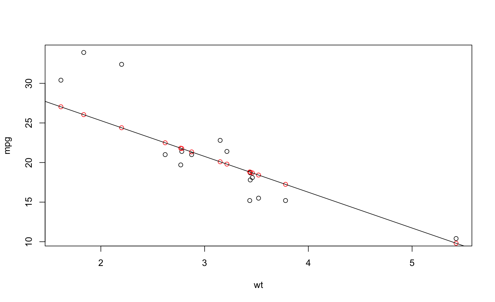
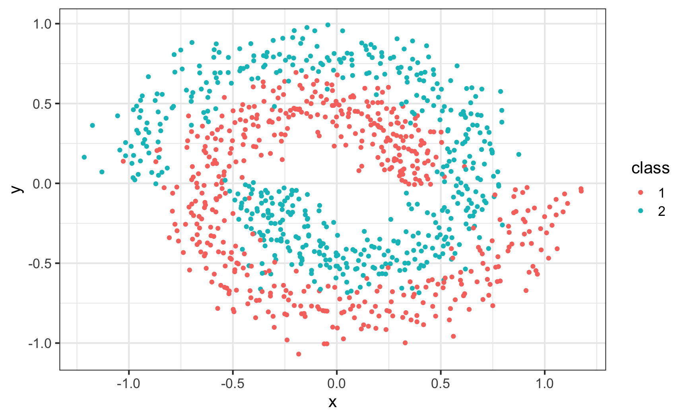
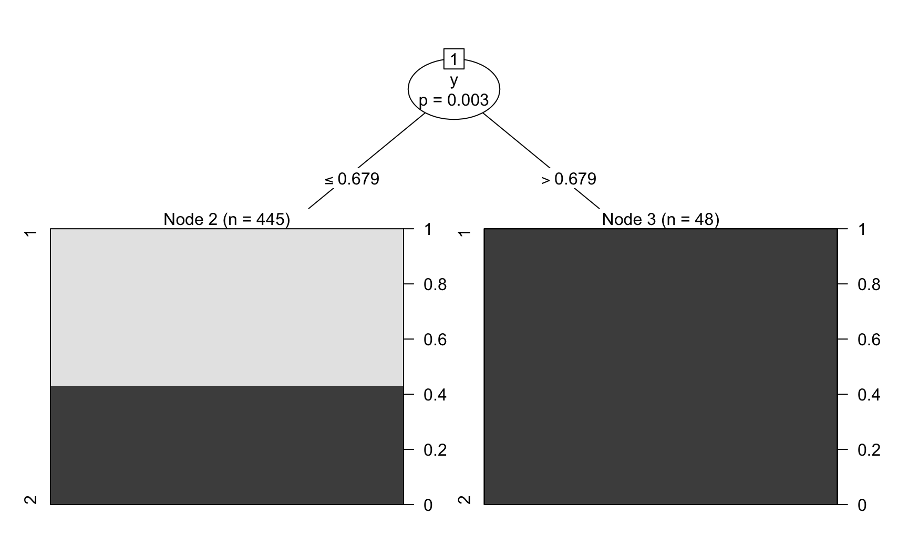
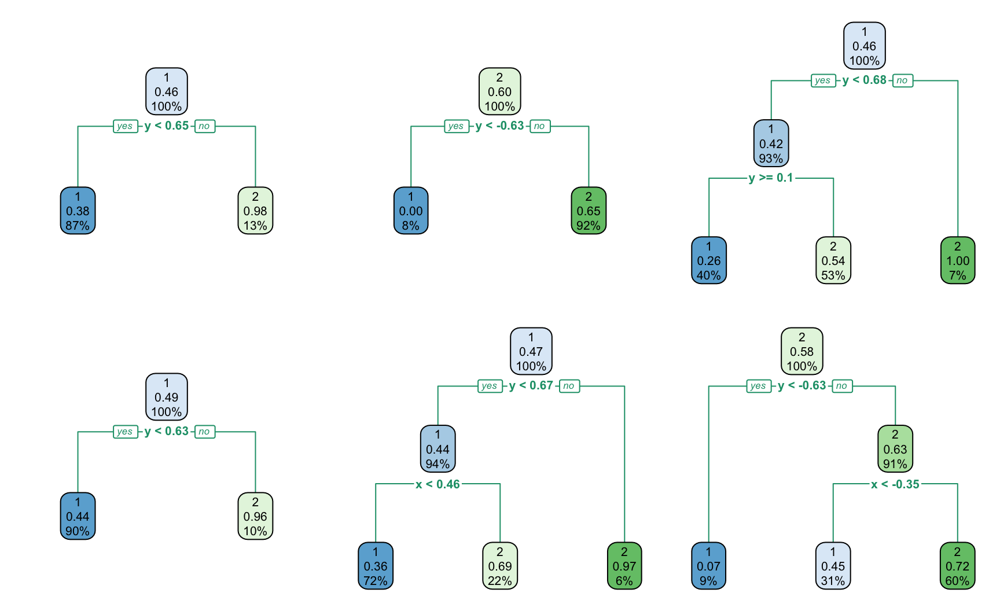

Machine Learning
A hands-on introduction using R
Sean Davis
Preliminaries
Install required libraries.
library(BiocInstaller)
biocLite(c("mlbench", "adabag", "e1071", "randomForest", "party",
"mboost", "rpart.plot", "formatR"))require(c("mlbench", "adabag", "e1071", "randomForest", "party",
"mboost", "rpart.plot", "formatR"))Some links of interest
Overview
What is machine learning?
Machine learning is a broad set of fields related to computers learning from “experience” (data).
- Focusing on predictive modeling with a goal of producing the most accurate estimates of some quantity or the most likely output of an event.
- These models are sometimes based on similar models for inference (testing against a null hypothesis, such as linear regression), but in many cases, predictive models are not well-suited for inference (think k-nearest-neighbor, for example).
The formula interface
The variable outcome is predicted by var1, var2, ...
Conveniences of the formula interface:
- Transformations such as
log10(acres)can be specified inline. - Factors are converted into dummy variables automatically.
The Non-formula interface
- The non-formula interface specifies the predictors as a matrix or data frame.
- The outcome data are then passed into the model as a vector.
Many R functions offer both a formula and a non-formula interface, but not all.
General workflow for machine learning in R
Fit the model to a set of training data
- Assess the properties of the model using
print,plot,summaryor other methods Predict outcomes for samples using the predict method:
Exercise 1
Is mpg a function of wt?
The formula interface in action:
##
## Call:
## lm(formula = mpg ~ wt, data = mtcars)
##
## Residuals:
## Min 1Q Median 3Q Max
## -4.543 -2.365 -0.125 1.410 6.873
##
## Coefficients:
## Estimate Std. Error t value Pr(>|t|)
## (Intercept) 37.285 1.878 19.86 < 2e-16 ***
## wt -5.344 0.559 -9.56 1.3e-10 ***
## ---
## Signif. codes:
## 0 '***' 0.001 '**' 0.01 '*' 0.05 '.' 0.1 ' ' 1
##
## Residual standard error: 3.05 on 30 degrees of freedom
## Multiple R-squared: 0.753, Adjusted R-squared: 0.745
## F-statistic: 91.4 on 1 and 30 DF, p-value: 1.29e-10And make a plot.
Is mpg a function of wt?

Use wt to predict mpg
And predict the original data based on the fitted model.
## Min. 1st Qu. Median Mean 3rd Qu. Max.
## 8.3 18.0 19.5 20.1 23.5 29.2And look at the predicted values:
Use wt to predict mpg

Quantifying “goodness-of-fit”

Quantifying “goodness-of-fit”
- Residual Sum of Squares \[ RSS = \sum_{N} (y_i - f(x_i))^{2} \]
Quantifying “goodness-of-fit”
## [1] 278## Analysis of Variance Table
##
## Response: mpg
## Df Sum Sq Mean Sq F value Pr(>F)
## wt 1 848 848 91.4 1.3e-10 ***
## Residuals 30 278 9
## ---
## Signif. codes:
## 0 '***' 0.001 '**' 0.01 '*' 0.05 '.' 0.1 ' ' 1Training versus testing
- What did we do wrong in quantifying our “goodness-of-fit”?
Splitting data and model performance evaluation
Common steps during training
- estimating model parameters (i.e. training models)
- determining the values of tuning parameters that cannot be directly calculated from the data
- calculating the performance of the final model that will generalize to new data
Spending the data to find an optimal model?
- Split data into training and test data sets
- Training Set: these data are used to estimate model parameters and to pick the values of the complexity parameter(s) for the model.
- Test Set (aka validation set): these data can be used to get an independent assessment of model accuracy. The test data should never be used in any aspect of model training.
Tradeoffs in spending data
The more data we spend, the better estimates we’ll get (provided the data is accurate). Given a fixed amount of dat:
- Too much spent in training won’t allow us to get a good assessment of predictive performance. We may find a model that fits the training data very well, but is not generalizable (over–fitting)
- Too much spent in testing won’t allow us to get a good assessment of model parameters
Example using mtcars
Using 50% of the data for training and 50% for testing is a place to start.
Train the model using the training data
## Analysis of Variance Table
##
## Response: mpg
## Df Sum Sq Mean Sq F value Pr(>F)
## wt 1 360 360 42 1.4e-05 ***
## Residuals 14 120 9
## ---
## Signif. codes:
## 0 '***' 0.001 '**' 0.01 '*' 0.05 '.' 0.1 ' ' 1Train the model using the training data

Test our model using the testing data
## [1] 181## Analysis of Variance Table
##
## Response: mpg
## Df Sum Sq Mean Sq F value Pr(>F)
## wt 1 360 360 42 1.4e-05 ***
## Residuals 14 120 9
## ---
## Signif. codes:
## 0 '***' 0.001 '**' 0.01 '*' 0.05 '.' 0.1 ' ' 1Test our model using the testing data

Example 2
Classification Trees
As a simple dataset to try with machine learning, we are going to predict the species of iris based on four measurements.
Iris Data
Another slide
We can start with a simple learner, a classification tree. This learner requires:
- A known class for each observation
- A set of “features” that will serve a potential predictors
- Start with whole dataset.
- Choose features one-at-a-time and look for a value of each variable that ends up with the most homogeneous two groups after splitting on that variable/value.
- For each resulting group, repeat step 2 until all remaining groups have only one class in them.
- Optionally, “prune” the tree to keep only splits that are “statistically significant”.
Learning the model
The party package includes a function, ctree to “learn” a tree from data.
Learning the model
Checking the model
## prediction
## setosa versicolor virginica
## 50 54 46## Confusion Matrix and Statistics
##
## Reference
## Prediction setosa versicolor virginica
## setosa 50 0 0
## versicolor 0 49 1
## virginica 0 5 45
##
## Overall Statistics
##
## Accuracy : 0.96
## 95% CI : (0.915, 0.985)
## No Information Rate : 0.36
## P-Value [Acc > NIR] : <2e-16
##
## Kappa : 0.94
## Mcnemar's Test P-Value : NA
##
## Statistics by Class:
##
## Class: setosa Class: versicolor
## Sensitivity 1.000 0.907
## Specificity 1.000 0.990
## Pos Pred Value 1.000 0.980
## Neg Pred Value 1.000 0.950
## Prevalence 0.333 0.360
## Detection Rate 0.333 0.327
## Detection Prevalence 0.333 0.333
## Balanced Accuracy 1.000 0.948
## Class: virginica
## Sensitivity 0.978
## Specificity 0.952
## Pos Pred Value 0.900
## Neg Pred Value 0.990
## Prevalence 0.307
## Detection Rate 0.300
## Detection Prevalence 0.333
## Balanced Accuracy 0.965Data splitting, take 2
What is the problem with what we just did to determine our prediction accuracy?
To deal with this problem, we can split the dataset into a “training” set and then check our prediction on the other piece of the data, the “test” set.
set.seed(42)
trainIdx = sample(c(TRUE, FALSE), size = nrow(iris), prob = c(0.2,
0.8), replace = TRUE)
irisTrain = iris[trainIdx, ]
irisTest = iris[!trainIdx, ]
nrow(irisTrain)## [1] 35## [1] 115“train” our tree on the “training” set.
“train” our tree on the “training” set.

Test our predictions on the “training” data
And how does our trainTree do at predicting the original classes in the “training” data?
Test our predictions on the “training” data
## Confusion Matrix and Statistics
##
## Reference
## Prediction setosa versicolor virginica
## setosa 18 0 0
## versicolor 0 0 5
## virginica 0 0 12
##
## Overall Statistics
##
## Accuracy : 0.857
## 95% CI : (0.697, 0.952)
## No Information Rate : 0.514
## P-Value [Acc > NIR] : 2.28e-05
##
## Kappa : 0.749
## Mcnemar's Test P-Value : NA
##
## Statistics by Class:
##
## Class: setosa Class: versicolor
## Sensitivity 1.000 NA
## Specificity 1.000 0.857
## Pos Pred Value 1.000 NA
## Neg Pred Value 1.000 NA
## Prevalence 0.514 0.000
## Detection Rate 0.514 0.000
## Detection Prevalence 0.514 0.143
## Balanced Accuracy 1.000 NA
## Class: virginica
## Sensitivity 0.706
## Specificity 1.000
## Pos Pred Value 1.000
## Neg Pred Value 0.783
## Prevalence 0.486
## Detection Rate 0.343
## Detection Prevalence 0.343
## Balanced Accuracy 0.853Test our predictions on the “testing” data
How is our prediction performance now on the “test” data?
Test our predictions on the “testing” data
## Confusion Matrix and Statistics
##
## Reference
## Prediction setosa versicolor virginica
## setosa 30 0 2
## versicolor 0 0 45
## virginica 0 0 38
##
## Overall Statistics
##
## Accuracy : 0.591
## 95% CI : (0.496, 0.682)
## No Information Rate : 0.739
## P-Value [Acc > NIR] : 1
##
## Kappa : 0.402
## Mcnemar's Test P-Value : NA
##
## Statistics by Class:
##
## Class: setosa Class: versicolor
## Sensitivity 1.000 NA
## Specificity 0.976 0.609
## Pos Pred Value 0.938 NA
## Neg Pred Value 1.000 NA
## Prevalence 0.261 0.000
## Detection Rate 0.261 0.000
## Detection Prevalence 0.278 0.391
## Balanced Accuracy 0.988 NA
## Class: virginica
## Sensitivity 0.447
## Specificity 1.000
## Pos Pred Value 1.000
## Neg Pred Value 0.390
## Prevalence 0.739
## Detection Rate 0.330
## Detection Prevalence 0.330
## Balanced Accuracy 0.724Example 3
k-nearest-neighbor
Now, let’s make this harder. We will now look at a dataset that is designed to “foil” classifiers.
k-nearest-neighbor

Without splitting data
library(caret)
fit = knn3(class ~ ., data = spiral)
confusionMatrix(predict(fit, spiral, type = "class"), spiral$class)## Confusion Matrix and Statistics
##
## Reference
## Prediction 1 2
## 1 466 30
## 2 34 470
##
## Accuracy : 0.936
## 95% CI : (0.919, 0.95)
## No Information Rate : 0.5
## P-Value [Acc > NIR] : <2e-16
##
## Kappa : 0.872
## Mcnemar's Test P-Value : 0.708
##
## Sensitivity : 0.932
## Specificity : 0.940
## Pos Pred Value : 0.940
## Neg Pred Value : 0.933
## Prevalence : 0.500
## Detection Rate : 0.466
## Detection Prevalence : 0.496
## Balanced Accuracy : 0.936
##
## 'Positive' Class : 1
## Cross-validation
setup
library(caret)
indxTrain <- createDataPartition(y = spiral$class, p = 0.75,
list = FALSE)
training <- spiral[indxTrain, ]
testing <- spiral[-indxTrain, ]
ctrl <- trainControl(method = "repeatedcv", repeats = 3)
knnFit <- train(class ~ ., data = training, method = "knn", trControl = ctrl,
tuneLength = 10)Cross-validation
## k-Nearest Neighbors
##
## 750 samples
## 2 predictor
## 2 classes: '1', '2'
##
## No pre-processing
## Resampling: Cross-Validated (10 fold, repeated 3 times)
## Summary of sample sizes: 674, 675, 675, 674, 675, 675, ...
## Resampling results across tuning parameters:
##
## k Accuracy Kappa
## 5 0.929 0.859
## 7 0.931 0.861
## 9 0.928 0.855
## 11 0.928 0.855
## 13 0.926 0.852
## 15 0.926 0.852
## 17 0.926 0.852
## 19 0.924 0.848
## 21 0.924 0.849
## 23 0.925 0.850
##
## Accuracy was used to select the optimal model using
## the largest value.
## The final value used for the model was k = 7.Exercise 4
What is an ensemble of learners?
In some cases, a machine learning algorithm can have limited predictive power, but using multiple “instances” of such weak learners in combination can produce a good result.
It is probably obvious that a classification tree approach might be problematic for a dataset like the spiral dataset. In this example, we are going to use “boosting” to combine many trees, each with minimal prediction capabilities, into an “ensemble” learner with reasonable good prediction capabilities.
Using trees to predict on the spiral dataset
Using trees to predict on the spiral dataset

Using trees to predict on the spiral dataset
Training Data
## Confusion Matrix and Statistics
##
## Reference
## Prediction 1 2
## 1 253 0
## 2 192 48
##
## Accuracy : 0.611
## 95% CI : (0.566, 0.654)
## No Information Rate : 0.903
## P-Value [Acc > NIR] : 1
##
## Kappa : 0.204
## Mcnemar's Test P-Value : <2e-16
##
## Sensitivity : 0.569
## Specificity : 1.000
## Pos Pred Value : 1.000
## Neg Pred Value : 0.200
## Prevalence : 0.903
## Detection Rate : 0.513
## Detection Prevalence : 0.513
## Balanced Accuracy : 0.784
##
## 'Positive' Class : 1
## Using trees to predict on the spiral dataset
Testing data
spiralTest = spiral[!trainIdx, ]
prediction = predict(trainTree, spiralTest)
confusionMatrix(spiralTest$class, prediction)## Confusion Matrix and Statistics
##
## Reference
## Prediction 1 2
## 1 246 1
## 2 211 49
##
## Accuracy : 0.582
## 95% CI : (0.538, 0.625)
## No Information Rate : 0.901
## P-Value [Acc > NIR] : 1
##
## Kappa : 0.181
## Mcnemar's Test P-Value : <2e-16
##
## Sensitivity : 0.538
## Specificity : 0.980
## Pos Pred Value : 0.996
## Neg Pred Value : 0.188
## Prevalence : 0.901
## Detection Rate : 0.485
## Detection Prevalence : 0.487
## Balanced Accuracy : 0.759
##
## 'Positive' Class : 1
## Using trees to predict on the spiral dataset
Many trees have similar prediction capability, but each is really bad. This is a characteristic of a “weak learner”. Here, we see that in action by performing a bootstrap sampling (resample with replacement), train, plot, and check prediction accuracy.
Using trees to predict on the spiral dataset
Must be run “locally” to see effect.
plotBootSample = function(spiral) {
trainIdx = sample(1:nrow(spiral), replace = TRUE)
spiralTrain = spiral[trainIdx, ]
trainTree = ctree(class ~ ., spiralTrain)
plot(trainTree)
spiralTest = spiral[-trainIdx, ]
prediction = predict(trainTree, spiralTest)
print(confusionMatrix(spiralTest$class, prediction)$overall["Accuracy"])
}Boosting
We can “combine” a bunch of “weak learners”, giving more “weight” to hard-to-classify observations as we build each new classifier. In this case, we will be using the same classification tree approach again.
Boosting results
A few trees from our ensemble

Boosted trees on test data
Boosted trees on test data
## Confusion Matrix and Statistics
##
## Reference
## Prediction 1 2
## 1 236 11
## 2 29 218
##
## Accuracy : 0.919
## 95% CI : (0.891, 0.942)
## No Information Rate : 0.536
## P-Value [Acc > NIR] : < 2e-16
##
## Kappa : 0.838
## Mcnemar's Test P-Value : 0.00719
##
## Sensitivity : 0.891
## Specificity : 0.952
## Pos Pred Value : 0.955
## Neg Pred Value : 0.883
## Prevalence : 0.536
## Detection Rate : 0.478
## Detection Prevalence : 0.500
## Balanced Accuracy : 0.921
##
## 'Positive' Class : 1
## Exercise 5
Random Forests
##
## Call:
## randomForest(formula = Species ~ ., data = iris)
## Type of random forest: classification
## Number of trees: 500
## No. of variables tried at each split: 2
##
## OOB estimate of error rate: 4%
## Confusion matrix:
## setosa versicolor virginica class.error
## setosa 50 0 0 0.00
## versicolor 0 47 3 0.06
## virginica 0 3 47 0.06sessionInfo
sessionInfo
## R version 3.5.0 RC (2018-04-16 r74624)
## Platform: x86_64-apple-darwin15.6.0 (64-bit)
## Running under: macOS Sierra 10.12.6
##
## Matrix products: default
## BLAS: /Library/Frameworks/R.framework/Versions/3.5/Resources/lib/libRblas.0.dylib
## LAPACK: /Library/Frameworks/R.framework/Versions/3.5/Resources/lib/libRlapack.dylib
##
## locale:
## [1] en_US.UTF-8/en_US.UTF-8/en_US.UTF-8/C/en_US.UTF-8/en_US.UTF-8
##
## attached base packages:
## [1] grid stats4 parallel stats graphics
## [6] grDevices utils datasets methods base
##
## other attached packages:
## [1] randomForest_4.6-14
## [2] rpart.plot_2.2.0
## [3] formatR_1.5
## [4] e1071_1.6-8
## [5] party_1.3-0
## [6] strucchange_1.5-1
## [7] sandwich_2.4-0
## [8] zoo_1.8-1
## [9] modeltools_0.2-21
## [10] mvtnorm_1.0-8
## [11] adabag_4.2
## [12] doParallel_1.0.11
## [13] iterators_1.0.9
## [14] foreach_1.4.4
## [15] caret_6.0-80
## [16] lattice_0.20-35
## [17] rpart_4.1-13
## [18] mlbench_2.1-1
## [19] rafalib_1.0.0
## [20] GSE5859_1.0
## [21] Gviz_1.24.0
## [22] SRAdbV2_0.1.0
## [23] MASS_7.3-50
## [24] cluster_2.0.7-1
## [25] boot_1.3-20
## [26] ggbio_1.28.0
## [27] TxDb.Hsapiens.UCSC.hg19.knownGene_3.2.2
## [28] GenomicAlignments_1.15.14
## [29] survival_2.42-3
## [30] RColorBrewer_1.1-2
## [31] GEOquery_2.47.18
## [32] tximport_1.7.14
## [33] bindrcpp_0.2.2
## [34] dplyr_0.7.4
## [35] airway_0.114.0
## [36] nycflights13_0.2.2
## [37] ggplot2_2.2.1
## [38] knitr_1.20
## [39] BSgenome.Hsapiens.UCSC.hg19_1.4.0
## [40] BSgenome_1.47.5
## [41] rtracklayer_1.39.13
## [42] BiocStyle_2.7.9
## [43] VariantAnnotation_1.25.13
## [44] SummarizedExperiment_1.9.18
## [45] DelayedArray_0.5.35
## [46] BiocParallel_1.13.3
## [47] matrixStats_0.53.1
## [48] Rsamtools_1.31.3
## [49] Biostrings_2.47.12
## [50] XVector_0.19.9
## [51] GenomicFeatures_1.31.10
## [52] AnnotationDbi_1.41.6
## [53] Biobase_2.39.2
## [54] GenomicRanges_1.31.23
## [55] GenomeInfoDb_1.15.5
## [56] IRanges_2.13.29
## [57] S4Vectors_0.17.43
## [58] AnnotationHub_2.12.0
## [59] BiocGenerics_0.25.3
##
## loaded via a namespace (and not attached):
## [1] utf8_1.1.3
## [2] tidyselect_0.2.4
## [3] RSQLite_2.1.0
## [4] htmlwidgets_1.2
## [5] munsell_0.4.3
## [6] codetools_0.2-15
## [7] withr_2.1.2
## [8] colorspace_1.3-2
## [9] BiocInstaller_1.30.0
## [10] OrganismDbi_1.22.0
## [11] highr_0.6
## [12] rstudioapi_0.7
## [13] geometry_0.3-6
## [14] robustbase_0.93-1
## [15] dimRed_0.1.0
## [16] labeling_0.3
## [17] GenomeInfoDbData_1.1.0
## [18] mnormt_1.5-5
## [19] bit64_0.9-7
## [20] rprojroot_1.3-2
## [21] TH.data_1.0-8
## [22] ipred_0.9-6
## [23] xfun_0.1
## [24] biovizBase_1.28.0
## [25] R6_2.2.2
## [26] AnnotationFilter_1.4.0
## [27] DRR_0.0.3
## [28] bitops_1.0-6
## [29] reshape_0.8.7
## [30] assertthat_0.2.0
## [31] promises_1.0.1
## [32] scales_0.5.0
## [33] multcomp_1.4-8
## [34] nnet_7.3-12
## [35] gtable_0.2.0
## [36] ddalpha_1.3.4
## [37] ensembldb_2.4.1
## [38] timeDate_3043.102
## [39] rlang_0.2.1
## [40] CVST_0.2-2
## [41] RcppRoll_0.3.0
## [42] splines_3.5.0
## [43] lazyeval_0.2.1
## [44] ModelMetrics_1.1.0
## [45] acepack_1.4.1
## [46] dichromat_2.0-0
## [47] broom_0.4.4
## [48] checkmate_1.8.5
## [49] yaml_2.1.19
## [50] reshape2_1.4.3
## [51] abind_1.4-5
## [52] backports_1.1.2
## [53] httpuv_1.4.3
## [54] Hmisc_4.1-1
## [55] RBGL_1.55.1
## [56] tools_3.5.0
## [57] lava_1.6.2
## [58] bookdown_0.7
## [59] psych_1.8.3.3
## [60] Rcpp_0.12.17
## [61] plyr_1.8.4
## [62] base64enc_0.1-3
## [63] progress_1.1.2
## [64] zlibbioc_1.25.0
## [65] purrr_0.2.5
## [66] RCurl_1.95-4.10
## [67] prettyunits_1.0.2
## [68] sfsmisc_1.1-2
## [69] magrittr_1.5
## [70] data.table_1.10.4-3
## [71] ProtGenerics_1.12.0
## [72] hms_0.4.2
## [73] mime_0.5
## [74] evaluate_0.10.1
## [75] xtable_1.8-2
## [76] XML_3.98-1.11
## [77] gridExtra_2.3
## [78] compiler_3.5.0
## [79] biomaRt_2.35.13
## [80] tibble_1.4.2
## [81] crayon_1.3.4
## [82] htmltools_0.3.6
## [83] later_0.7.2
## [84] Formula_1.2-3
## [85] tidyr_0.8.0
## [86] lubridate_1.7.4
## [87] DBI_0.8
## [88] magic_1.5-8
## [89] Matrix_1.2-14
## [90] readr_1.1.1
## [91] cli_1.0.0
## [92] bindr_0.1.1
## [93] gower_0.1.2
## [94] pkgconfig_2.0.1
## [95] revealjs_0.9
## [96] coin_1.2-2
## [97] foreign_0.8-70
## [98] recipes_0.1.3
## [99] xml2_1.2.0
## [100] prodlim_2018.04.18
## [101] stringr_1.3.1
## [102] digest_0.6.15
## [103] pls_2.6-0
## [104] graph_1.57.1
## [105] rmarkdown_1.10
## [106] htmlTable_1.12
## [107] curl_3.2
## [108] kernlab_0.9-26
## [109] shiny_1.0.5
## [110] nlme_3.1-137
## [111] jsonlite_1.5
## [112] limma_3.35.15
## [113] pillar_1.2.2
## [114] GGally_1.4.0
## [115] httr_1.3.1
## [116] DEoptimR_1.0-8
## [117] interactiveDisplayBase_1.18.0
## [118] glue_1.2.0.9000
## [119] bit_1.1-12
## [120] class_7.3-14
## [121] stringi_1.2.2
## [122] blob_1.1.1
## [123] latticeExtra_0.6-28
## [124] memoise_1.1.0<script>
(function(i,s,o,g,r,a,m){i['GoogleAnalyticsObject']=r;i[r]=i[r]||function(){
(i[r].q=i[r].q||[]).push(arguments)},i[r].l=1*new Date();a=s.createElement(o),
m=s.getElementsByTagName(o)[0];a.async=1;a.src=g;m.parentNode.insertBefore(a,m)
})(window,document,'script','https://www.google-analytics.com/analytics.js','ga');
ga('create', 'UA-93043521-1', 'auto');
ga('send', 'pageview');
var links = document.querySelectorAll('a');
Array.prototype.map.call(links, function(item) {
if (item.host != document.location.host) {
item.addEventListener('click', function() {
var action = item.getAttribute('data-action') || 'follow';
ga('send', 'event', 'outbound', action, item.href);
});
}
});
</script>